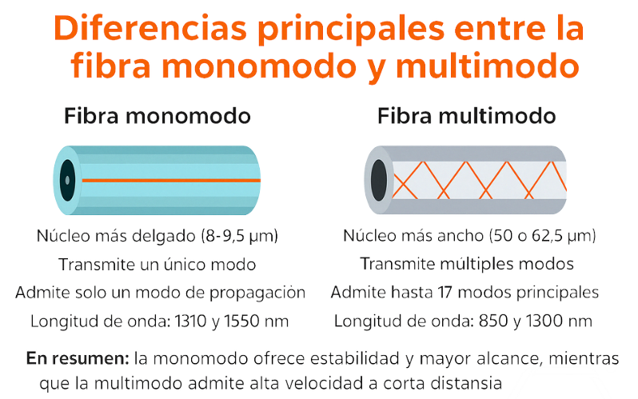

Tipos
Existen dos tipos principales:
- Monomodo (OS1 y OS2): transmite una sola señal de luz, permite mayores velocidades y largas distancias.
- Multimodo (OM1, OM2, OM3, OM4 y OM5): transmite varias señales simultáneamente y se utiliza principalmente en distancias cortas o medias, como edificios y centros de datos.
Volver al inicio
